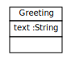

Scenario TTC2011HelloWorldConstantTransformation1
A constant transformation that creates a Greeting object
Create class model and generate implementation:
The code that builds and runs the transformation / pattern looks like:
ModelPattern p = new ModelPattern().startCreate();
PatternObject greetingPO = p.hasElementGreetingPO()
.hasText("Hello World");